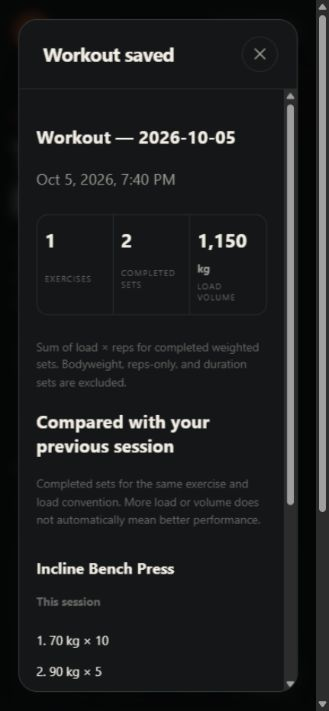
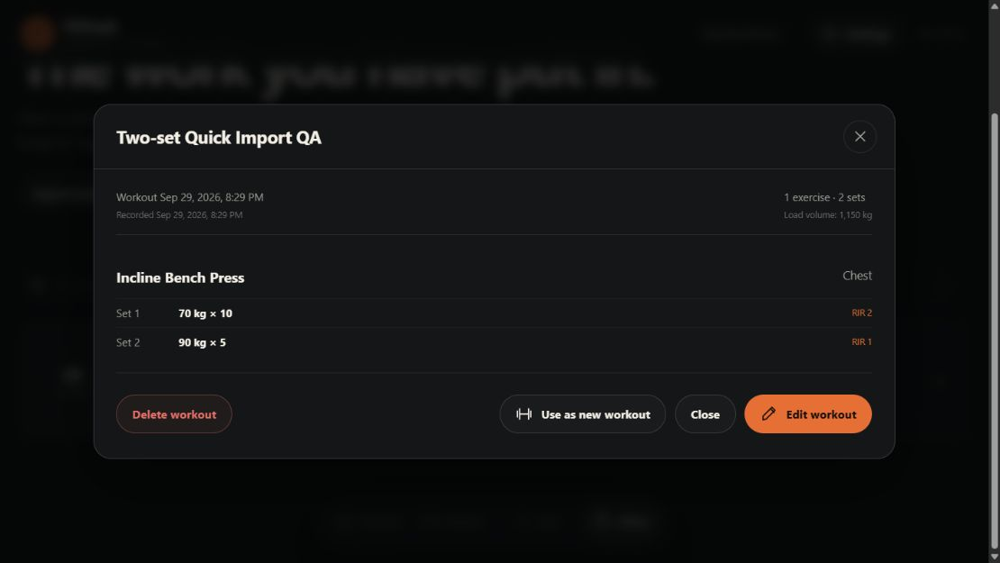
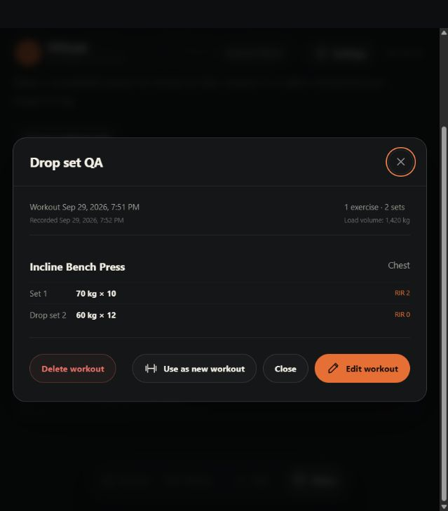

Case file 01Produk pribadi · 2026
Live product
Product analytics
FitTrack
Saya membangun FitTrack agar catatan latihan bisa dilihat kembali sebagai progres. Pengguna dapat mencatat sesi, membandingkan riwayat, dan membaca grafiknya, termasuk saat sedang offline.
- Tantangan
- Catatan latihan mudah tercecer dan sulit dibaca kembali sebagai progres.
- Pendekatan
- Saya menyatukan pencatatan, riwayat, grafik progres, volume mingguan, dan estimasi 1RM, yaitu perkiraan beban maksimal untuk satu repetisi.
- Kontribusi
- Saya merancang alur, membangun aplikasinya, lalu menguji kembali perilaku fitur analitiknya.



13
05 / Komentar
Ada masukan atau pertanyaan?
Ada yang ingin ditanyakan tentang proyek saya? Tinggalkan komentar di sini. Untuk peluang kerja, gunakan kontak di atas.
Komentar